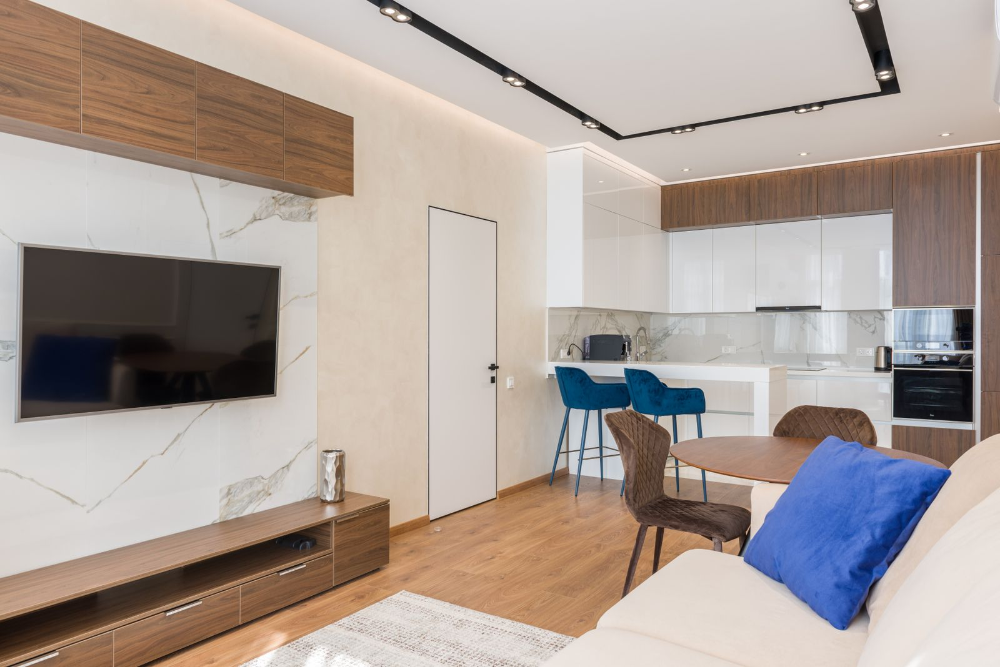

Setup
Living Room
The shared family space: windows, lamps, and daytime viewing. Prioritize brightness and an ALR or gray screen to fight ambient light, keep the projector on a shelf or ceiling mount behind the seating, and add a soundbar for instant improvement. A pull-down screen keeps the room looking like a living room.
Check Your Throw Distance